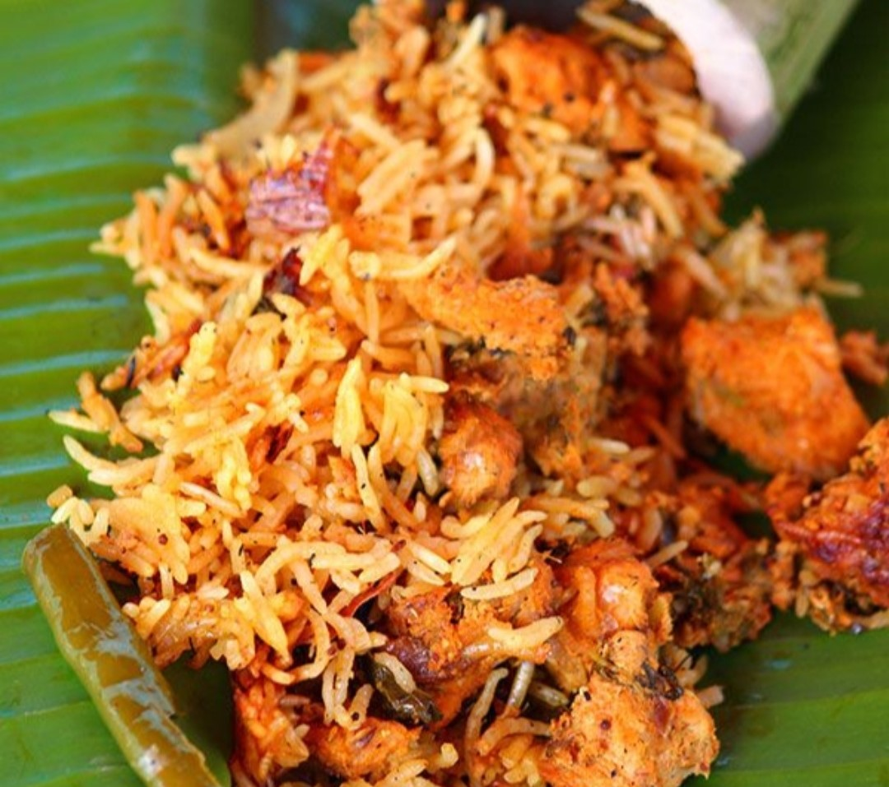

Chicken Biryani
Home
Chicken bamboo biryani is a delicious and inventive biryani recipe in which rice is cooked with authentic spices and chicken inside a bamboo. It is a south Indian Rice Recipe dish which is served as a main dish. This super delicious bamboo biryani recipe will surely give a punch to your taste buds, and it is best to serve with raita and pickle.

Ingredients
300 grams chicken
3 cardamoms
1- inch cinnamon stick
3 cloves
1/8 piece nutmeg
1 star anise
1 kapok bud
1 flower mace
Salt as required
½ tsp turmeric powder
2 tsp red chili powder
1 tsp coriander powder
1 tsp biryani masala
1 ½ tsp ginger garlic paste
½ lemon
¼ cup fried onions
½ cup yogurt
¼ cup mint leaves
¼ cup coriander leaves
4 to 5 tbsp oil
For Marinating Rice
1 ½ cup basmati rice(1 cup-=250ml)
2 to 3 tbsp oil
3 cardamoms
1 kapok bud
1 inch cinnamon stick
3 cloves
½ mace
1 star anise
1/8 piece nutmeg
Salt as required
½ tsp chili powder
½ tsp biryani masala
½ tsp ginger garlic paste
½ tsp turmeric powder
1 onion
3 green chilies
¼ cup mint leaves
For Assembling
1 tbsp oil
1 ¼ cups water
Aluminium foil to cover
2 to 3 bamboos green
Nutrition Facts
Calories 202
Total Fat 4.6g
Cholesterol 38mg(13%)
Sodium 318mg
Total Carbohydrate 27g
Vitamin D 0.20mcg
Protein 14g
Procedure
Marinating the Chicken
Take chicken into a mixing bowl.
Add whole garam masala spices, salt as required, turmeric powder, red chili powder, biryani masala, ginger garlic paste, coriander powder, fried onions, half a lemon, yogurt, mint leaves, coriander leaves, oil and mix well.
Leave the marinade for an hour.
Marinating The Rice
Take raw basmati rice into a mixing bowl.
Add oil, salt, whole garam masala spices, ginger garlic paste, turmeric powder, red chili powder, biryani masala, onions, green chilies, mint leaves and mix well.
Keep it aside for an hour.
Assembling
Clean the bamboo until you find no dust inside.
Grease the inner part with oil.
Put 2 spoonfuls of chicken marinade first and then 4 to 5 spoons of rice.repeat the process again.
Add 1 ¼ cups of water.
Water runs down to the bottom through the gaps.
Cover the bamboo with an aluminium foil.
Making Bamboo Biryani
Set fire and put the bamboos on it. Leave for 30 to 35 minutes turning in between.
Later remove it from the fire and leave for 5 to 10 minutes.
Serve hot on a banana leaf. For the best experience...!
Expert Guide
Back ←
Scroll to Top ↑